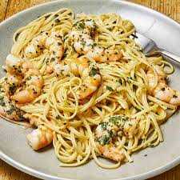

Shrimp Scampi

Description
Shrimp scampi is a delicious dish that is easy to make for a quick dinner
Ingredients
- 8 Ounces Linguine
- 2 Tablespoons unslated butter
- 1 Pound peeled and deveined shrimp
- 3 cloves garlic
- 1/4 teaspoon crushed red pepper flakes
- 1/4 cup white wine
- 1/4 cup lemon juice
- freshly grated parmesan to garnish
Steps
- Boil water to cook the pasta
- Melt the butter in a large skillet
- Add shrimp, garlic, red pepper flakes. Cook 2-3 minutes
- stir in wine and lemon juice;remove from heat and stir in pasta
- serve, garnished with parmesian